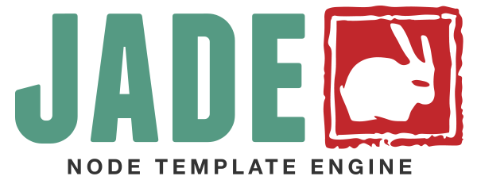
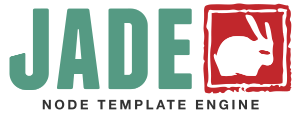

Artigo da IEEE
Este artigo é sencacional e foi criado pela IEEE na década de 90.
Interação Humano Computador
Criado por Thiago Moreira
| Versão | Ano |
|---|---|
| HTML | 1991 |
| HTML 2.0 | 1995 |
| HTML 3.2 | 1997 |
| HTML 4.01 | 1999 |
| XHTML | 2000 |
| HTML5 | 2014 |
| HTML5.1 | 2016/2017 |
| HTML5.2 | 2017 |
Título
 Link para o Site
Sou filho da div
Sou irmão do span
Link para o Site
Sou filho da div
Sou irmão do span
Faz o que antes só era possível com outras ferramentas e linguagens de programação
Tem suporte à áudio e vídeo de alto nível
Página de IHC
Site sobre IHC
Sessão 1 do site
Artigo da IEEE
Este artigo é sencacional e foi criado pela IEEE na década de 90.
Sessão 2 do site
The Scream por Edward Munch. Pintado em 1893.
Site sobre IHC
Sessão 1 do site
Artigo da IEEE
Este artigo é sencacional e foi criado pela IEEE na década de 90.
Sessão 2 do site
The Scream por Edward Munch. Pintado in 1893.
Título
-
Elemento da lista
h1.titulo-azul Título
ul.lista
li.elemento
div.divisao
h2.subtitulo
p.paragrafo Elemento da lista
 
